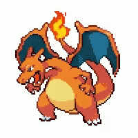

Bulbasaur #0001

Bulbasaur pode ser visto cochilando sob a luz do sol. Há uma semente
nas costas. Ao absorver os raios do sol, a semente cresce
progressivamente maior.
Ivysaur #0002

Uma característica marcante no Ivysaur é que ele possui um brotonas
costas. Para suportar seu peso, as pernas e o tronco de Ivysaur
ficam grossos e fortes.
Venusaur #0003

Diz-se que a flor adquire cores vivas se receber muita nutrição e
luz solar. O aroma da flor acalma as emoções das pessoas.
Charmander #0004

Obviamente prefere lugares quentes. Quando chove, diz-se que o vapor
jorra da ponta de sua cauda.
Charmeleon #0005

Charmeleon impiedosamente destrói seus inimigos usando suas garras
afiadas. Se encontrar um inimigo forte, ele se torna agressivo.
Nesse estado excitado, a chama na ponta de sua cauda brilha com uma
cor branca azulada
Charizard #0006

Charizard voa pelo céu em busca de oponentes poderosos. Ele respira
um calor tão grande que derrete qualquer coisa. No entanto, nunca dá
um sopro ardente a qualquer oponente mais fraco que ele.
Squirtle #0007

A concha de Squirtle não é apenas usada para proteção. A forma
arredondada da concha e as ranhuras na superfície ajudam a minimizar
a resistência na água, permitindo que este Pokémon nade em alta
velocidade.
Wartortle #0008

Sua cauda é grande e coberta com um pêlo rico e grosso. A cauda
torna-se cada vez mais profunda na cor à medida que Wartortle
envelhece. Os arranhões em sua concha são uma evidência da dureza
deste Pokémon como um lutador.
Blastoise #0009

Blastoise tem bicos de água que se projetam de sua concha. Os bicos
de água são muito precisos. Eles podem disparar balas de água com
precisão suficiente para atingir latas vazias a uma distância de
mais de 60 metros.